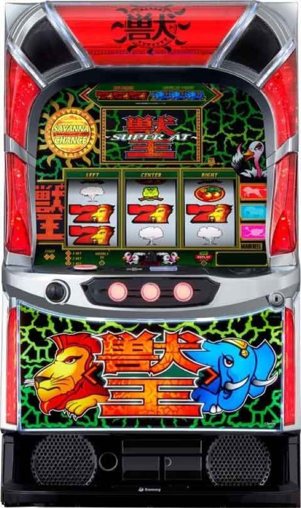

スマスロ 獣王
ベルナビ10・20・30回から、最大29Gの潜伏を経てサバ連へ。超サバで4大トリガーを狙う。
- 導入
- 2026年10月
- メーカー
- サミー
- 分類
- パチスロ
主要スペック
SC高確を突破して純増約8.0枚/Gのサバンナチャンスへ。ベルナビ回数、最大29Gの潜伏、ストック放出、超サバ、キリンサバチャン・サバチャンEX・100ナビフリーズ・REGまでを専用画面で体験できます。
- SCはベルナビ10・20・30回・EX、20ナビ以上は約1/3
- 初回SCからサバ連へ進む期待度は約50%
- 超サバ後は4大サバンナトリガーが発生しやすい
スマスロ 獣王の見どころと計算条件
SC高確を突破して純増約8.0枚/Gのサバンナチャンスへ。ベルナビ回数、最大29Gの潜伏、ストック放出、超サバ、キリンサバチャン・サバチャンEX・100ナビフリーズ・REGまでを専用画面で体験できます。
スマスロ 獣王を数字で早分かり
SC高確からサバンナチャンス、4大サバンナトリガーまでの流れと、設定ごとの結果差を固定レートで比較できます。
30秒で分かるスマスロ 獣王
ベルナビ回数ごとのSCを消化し、最大29Gの潜伏からストックを放出しながら超サバと4大トリガーを狙うストック連タイプです。
こんな遊び方に向いている
- SCごとのナビ回数と獲得枚数を確認したい
- 潜伏からのサバ連をPUSHで体験したい
- 超サバ後のKSC・EX・100ナビ・REGを狙いたい
遊ぶ前に確認したいこと
- SC純増・ナビ回数・潜伏・BONUSゲーム数は公開値
- KSCは80%／90%を個別抽選
- 未公表のストック数とトリガー振り分けは代表値
SC高確からサバンナチャンスへ
通常時はチャンス目・レア役・規定ゲーム数などからSC高確へ移行し、高確中は全役でサバンナチャンスを抽選します。SC高確中の当選期待度は約50%です。
専用画面では通常ゲームを進めたあと、SC高確を2秒間消化し、最後のPUSHでサバンナチャンスの当落を開きます。
ベルナビ回数と最大29Gの潜伏
サバンナチャンスは純増約8.0枚/G。ベルナビ回数は10・20・30回・EXで、20ナビ以上の選択率は約1/3です。
SC終了後は必ず潜伏へ移り、ストックがあれば最大29Gを経て次のSCを放出します。専用画面ではSCごとのナビ回数・獲得枚数と、潜伏後のストック放出を別々に表示します。
BIG・REGとSCストック
BIGは15G・純増約8.0枚/Gで、レア役やダチョウ揃いなどからSCストックを抽選します。160枚以上獲得時もSCストック濃厚です。
REGは10Gの上乗せ超高確率。押し順ベルの約66%でSCストック、レア役はストック濃厚となり、終了後は超サバへ移行します。
超サバと4大サバンナトリガー
SC2セット目以降は超サバを抽選し、5セット目以降はチャンスが高まります。超サバ獲得後は4大トリガーの発生率が上がります。
4大トリガーは、継続率約80%または90%のキリンサバチャン、30ナビがループするサバチャンEX、100ナビフリーズ、REGです。専用画面ではトリガーをPUSHで開き、その後のループも個別に進行します。
固定条件と簡略化する範囲
- 約31.8G/50枚・1,000円46枚貸し・5.2枚交換で固定
- 設定1・2・4・5・6を均等抽選し、公開SC初当りを使用
- SC純増、ナビ回数、潜伏、BIG／REGゲーム数、KSC継続率を反映
- 未公表のSCストック数・超サバ・4大トリガー振り分けは体験用代表値
- 19,000枚到達時はコンプリート表示
平均Gと投資目安の計算
掲載するサバンナチャンス初当り約1/326.5は設定1基準です。当サイトでは50枚あたり31.8G、1,000円46枚貸しの固定条件から、設定1基準の平均投資目安を約11,200円と計算します。
シミュレーターでは設定1・2・4・5・6を均等抽選します。設定1・2・4・5・6で公開されている初当り値を個別に使います。公開されていない特化ゾーン・上位到達率の設定差は加えません。 換金は5.2枚交換で固定し、結果とランキングに設定を表示します。
シミュレーション結果の見方
当るまでSC高確・サバンナチャンスまでのゲーム数
設定設定1・2・4・5・6から抽選された今回の設定
上位到達超サバと4大サバンナトリガーへの到達
最終収支差枚と5.2枚交換の収支目安
結果は自動で「マイ記録」に保存され、同じ機種を何回試したか、最高収支、勝率をあとから確認できます。
簡易シミュレーターについて
SC高確・サバンナチャンス・4大サバンナトリガーの流れを固定条件で体験できます。JavaScriptを有効にすると、この位置にシミュレーター、演出、マイ記録、機種別ランキングが表示されます。
結果は娯楽・確率理解のための参考表示です。金銭的価値や交換価値はなく、実際の勝敗や収支を保証しません。18歳未満の方の利用はお控えください。
スマスロ 獣王のよくある質問
スマスロ 獣王はどんな台？
SC高確を突破して純増約8.0枚/Gのサバンナチャンスへ。 SCはベルナビ10・20・30回・EX、20ナビ以上は約1/3が主な確認ポイントです。
スマスロ 獣王の平均投資目安は？
設定1基準のサバンナチャンス初当り約1/326.5と、50枚あたり31.8G・46枚貸しの固定条件から、平均11,200円を目安として表示します。実際の設定や遊技状況で結果は変わります。
設定とゲームの流れはどう抽選する？
開始時に設定1・2・4・5・6から1つを均等抽選し、SC高確、サバンナチャンス、超サバ、4大サバンナトリガーの順で到達を判定します。設定は最終結果とランキングに表示します。
収支はどう計算する？
1,000円46枚貸し・5.2枚交換の固定条件で投資、換金、収支目安を計算します。実店舗の再プレイ、持ちメダル、端数処理は含みません。